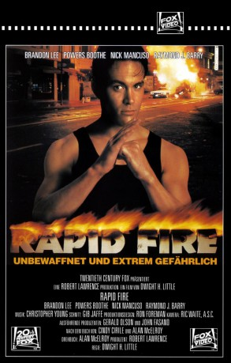

#10907 Rapid Fire - Unbewaffnet und extrem gefährlich
Alternativ: Rapid Fire (Englischer Titel)
 
 IMDB-Wertung: 6.3 / 10
IMDB-Wertung: 6.3 / 10  Metascore: 0
Metascore: 0 
Der Student Jake Lo wird Zeuge, wie der Mafia-Don Serrano einen Mord begeht. Das macht Jake zum heissesten Zeugen bei einem Prozess gegen Serrano, der seit Jahren immer wieder um Haaresbreite dem Zugriff der Polizei entkommen ist. Doch das FBI spielt falsch, und schon bald ist Jake Freiwild auf den Straßen von Chicago. Der desillusionierte Cop Mace nimmt sich des Jungen an und benutzt ihn als Köder, um Serrano und Drogenboss Tau zu schnappen. Mit Jakes Kampfkünsten gelingt es tatsächlich, Serrano hinter Gitter zu bringen. Dort schaltet Tau den Mafiosi aus. Jake muss erneut ins Geschehen eingreifen, als Mace in die Hände von Tau gerät.
Jahr: 1992
Dauer: 95 Minuten
FSK: 18
Land: USA Studio: Twentieth Century FoxTonspuren:
Untertitel: Deutsch, Englisch,
Auflösung: 1080p (1920x1040) Größe: 9492 MB
Genre: Action, Thriller, Drama, Krimi
Regisseur: Dwight H. Little
Drehbuch: Cindy Cirile, Alan B. McElroy, Alan B. McElroy
Soundtrack: Christopher Young
Darsteller:
- Brandon Lee als Jake Lo
 Powers Boothe als Mace Ryan
Powers Boothe als Mace Ryan- Nick Mancuso als Antonio Serrano
 Raymond J. Barry als Agent Stuart
Raymond J. Barry als Agent Stuart- Kate Hodge als Karla Withers
 Tzi Ma als Kinman Tau
Tzi Ma als Kinman Tau Tony Longo als Brunner Gazzi
Tony Longo als Brunner Gazzi Michael Paul Chan als Carl Chang
Michael Paul Chan als Carl Chang Dustin Nguyen als Paul Yang
Dustin Nguyen als Paul Yang Basil Wallace als Agent Wesley
Basil Wallace als Agent Wesley Al Leong als Minh
Al Leong als Minh François Chau als Farris
François Chau als Farris- Maurice Chasse als Sharpie
- Walter Addison als Detective
- John Vickery als Detective
 Donald Li als Tall Guard
Donald Li als Tall Guard- Michael Chong als John Lo
 Jeff McCarthy als Agent Anderson
Jeff McCarthy als Agent Anderson- Ronald William Lawrence als Jail Guard
 Richard Schiff als Art Teacher
Richard Schiff als Art Teacher- Roy Abramsohn als Agent Klein
- Diana Castle als Cop in Gallery Alley
 Carl Ciarfalio als Gunman (uncredited)
Carl Ciarfalio als Gunman (uncredited) Eddy Donno als Grey-Haired Man at Serrano's Place (uncredited)
Eddy Donno als Grey-Haired Man at Serrano's Place (uncredited) Leo Lee als Tau's Gunman at Laundry (uncredited)
Leo Lee als Tau's Gunman at Laundry (uncredited) Fred Lerner als Gunman with Shotgun (uncredited)
Fred Lerner als Gunman with Shotgun (uncredited) James Lew als Tau's Men at Laundry (uncredited)
James Lew als Tau's Men at Laundry (uncredited)- Cole S. McKay als Gunman in Car (uncredited)
 John Meier als Gunman (uncredited)
John Meier als Gunman (uncredited) Gerald Okamura als Tau's Gunman at Laundry (uncredited)
Gerald Okamura als Tau's Gunman at Laundry (uncredited) Charlie Picerni als Driver of Gunman Car (uncredited)
Charlie Picerni als Driver of Gunman Car (uncredited)- Damon Stout als Artist (uncredited)
- Brigitta Stenberg als Rosalyn
- Quentin O'Brien als Agent Daniels
- D.J. Howard als Sharpie
- C'Esca Lawrence als Lisa Stuart
- Marvin Elkins als Fireman
- Steve Pickering als Cop in Van
- Will Kepper als Jail Guard
- Al Foster als Jail Guard
- Chen Baoer Paul als Laundry Worker
- Cedric Young als Chicago Uniform
- Peter Russell als Ambulance Driver
- Phil Chong als Tau's Gunman (uncredited)
- Kenny Endoso als Tau's Gunman at Carl Chang Party (uncredited)
- Matt Johnston als Gunman (uncredited)
- Nathan Jung als Tau's Gunman at Laundry (uncredited)
- Gene LeBell als Red-Haired Gunman at Serrano's Place (uncredited)
- Chuck Picerni Jr. als Gunman at Serrano's Place (uncredited)
- Steve Picerni als Gunman (uncredited)
Datei: X:\FSK18-1900-1999\Rapid Fire - Unbewaffnet und extrem gefährlich (1992, FSK18, 1920x1040).mkv seit 03.04.2019
Festplatte: FSK18
 Es gibt insgesamt 108 Filme in der Gruppe 'FSK18-1900-1999'
Es gibt insgesamt 108 Filme in der Gruppe 'FSK18-1900-1999'